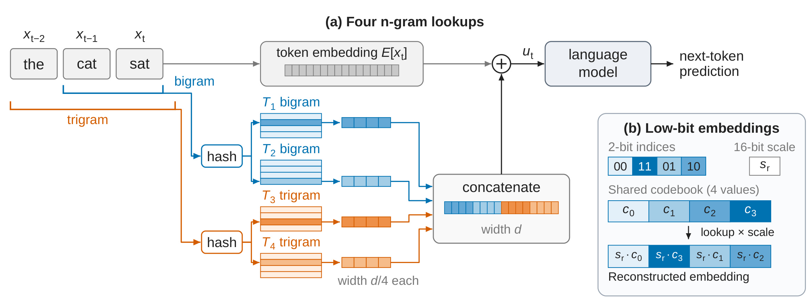
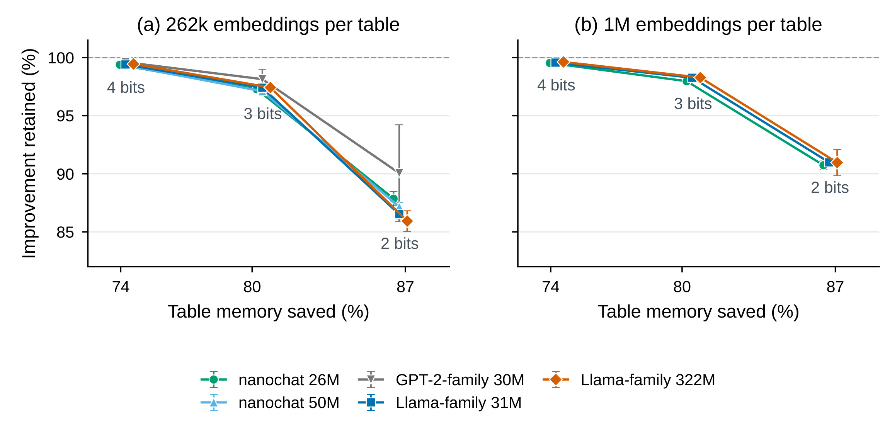
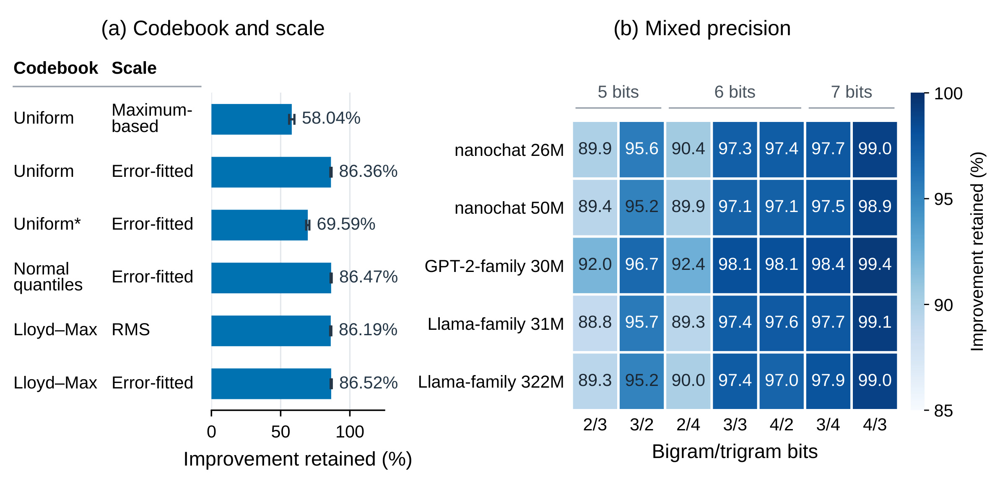
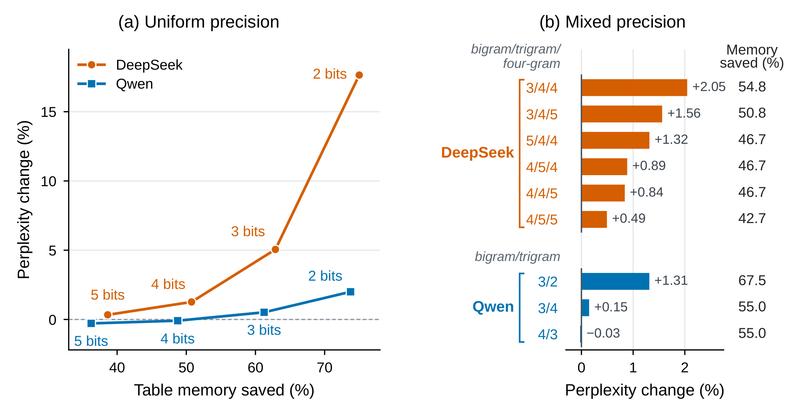
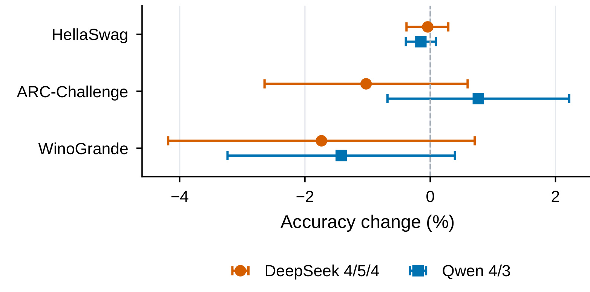
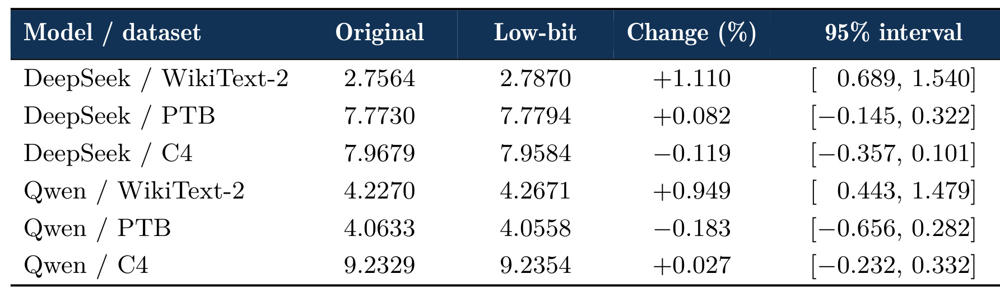
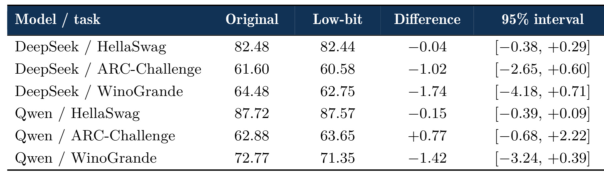
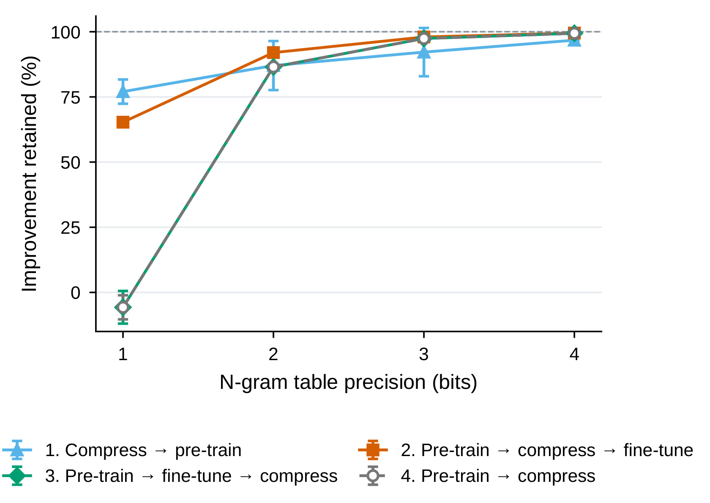
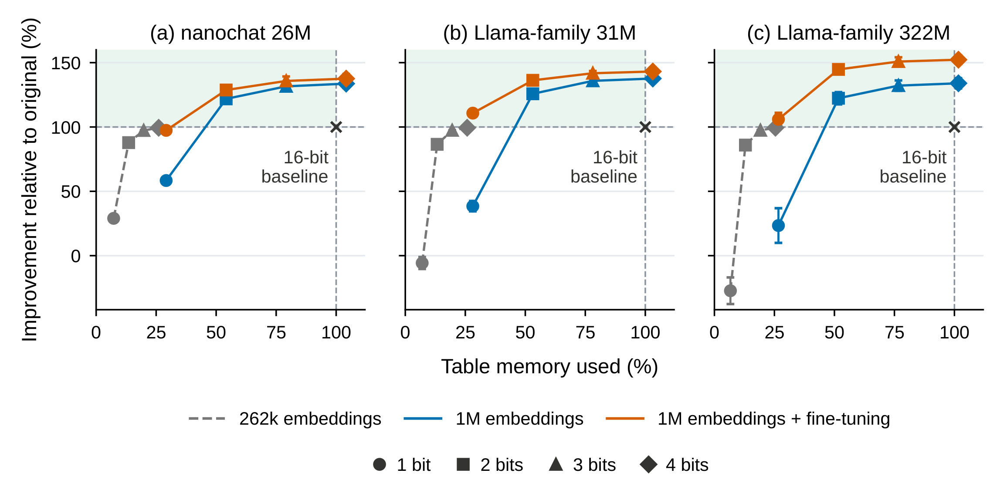

Low-Bit N-Gram Embeddings for Language Models / 低比特 N-Gram 嵌入
- 作者：Stephen Chung、Wenyu Du；机构：DualverseAI，PDF首页已核验。
- 来源：arXiv，首次公开2026-10-22；阅读日期2026-10-26。
- 论文入口：Low-Bit N-Gram Embeddings for Language Models。
- 代码：附录B.1给出 dualverse-ai/lowbit-ngram，未独立运行。
- 阅读范围：24页PDF正文与附录A–C；以下为作者报告，内存节省均指n-gram表。
1. 背景和问题
语言模型通常先把每个token变成向量，再让注意力和前馈层组合上下文。N-gram嵌入增加一种直接的局部记忆：把连续两个或三个token作为查表键，取出训练过的短语向量。相同局部模式不必每次完全依靠深层网络重新组合。它增加可寻址参数容量，而每个位置实际访问的向量数量很少，因此参数规模与单token计算量能够分开扩展。论文用巨大Engram表作为动机，研究对象始终是额外的查表参数，不能把结果解释为对Transformer全部权重的通用量化结论。
困难来自组合空间。八千多个token形成的二元组和三元组数量，远大于通常可以分配的表行数。已有方案用哈希把大量n-gram映射到固定数量的行。哈希减少存储，也引入参数共享：不相关的局部片段可能碰撞到同一向量。扩表可以缓解干扰，但每行都存多个连续值，内存会迅速增加。直接缩小表会同时减少参数容量、增加碰撞；本文研究另一条路，即保留地址数量而降低每个分量的表示精度。两种做法的误差来源不同，不应该只按参数个数比较。
嵌入表的访问方式让这个问题有特殊性。稠密层主要做矩阵乘法，低比特收益和专用算子紧密相关；大表主要做稀疏检索，每次仅解码被选中的少数行。存储位宽本身已经值得研究。不过理论压缩率不能直接等同服务吞吐：逐行尺度要读取，索引要解包，码本要访问，表位于CPU还是GPU、缓存是否命中、读取是否连续，都影响延迟。论文主要证明质量与表内存的权衡，没有给出足够系统实验来宣称端到端推理加速。本文所有省内存也只指n-gram表。
作者进一步问，节省空间是否一定要全部用于降成本？也可以增加表行数，在仍然低于原始预算时减少哈希碰撞。这样实际是在单个分量更精确和更多n-gram少共享之间重新分配容量。如果低精度误差小于碰撞误差，低比特大表就可能优于高精度小表。这里的比较对象需要始终写清：262k行、16比特的原始表，而不是同样行数的16比特大表，更不是训练成本完全相同的所有语言模型。更大表预训练之后再压缩，也不是给现有小表免费增加没有训练过的新知识。
论文证据链分为三层。首先在nanochat、GPT-2家族和Llama家族上从头训练，建立无表与16比特表端点，然后测量压缩后保留多少收益。其次对已经存在的大模型只压缩n-gram表，检查困惑度和下游准确率。最后改变训练次序、表规模和哈希方式，研究适配量化噪声及减少碰撞能否改善低比特效果。这三层回答不同问题：小模型收益百分比不能直接换成大模型准确率，大模型某一架构的精度偏好也不能推广到所有哈希记忆。
尤其应区分保留99%的改进和保持99%的模型性能。若无表损失是一，16比特表降到零点九七，表收益只有零点零三；保留99%就是保留其中零点零二九七。它不是任务准确率，也不代表99%的参数能够删除。分母是加表带来的损失差，当基础收益较小，这个比值会对训练随机性更敏感，甚至可能大于100%或变成负值。附录某些一比特模型确实差于无表端点，因此极低精度不能默认视为免费压缩。读者最好同时看绝对损失和相对收益，避免被相对百分比放大视觉感受。
推荐系统中也有很大的ID嵌入表，逐行尺度、低比特码本、混合维度都有已有工作。本文的价值更接近把这些思路在语言模型的n-gram记忆上做系统实验，同时展示精度预算与地址数量之间的交换。可迁移的是分别测量碰撞与量化误差，再用目标任务损失分配预算，而不是照搬某个bigram/trigram配置。推荐ID的频率长尾、点击目标、冷启动和在线更新模式，与局部token组合并不相同；本文没有推荐AUC或线上点击证据。
研究过程也有一个需要准确保留的背景：作者在第6节披露，线索由rStation自主研究agent发现，随后人类作者在平台外复现并扩展。它属于作者对研究流程的说明，不是第三方对全部实验的认证。评判仍应依靠公平基线、数值口径、代码和重复实验。机构已由原文确认，会议录用状态没有额外证据，本文按预印本阅读。后续工程判断把原文报告和本文推断分开，尤其不把模型名称中的Flash或压缩比当成实际吞吐证明。
还有一个区别决定如何解释实验：n-gram表记住的是局部连续片段的训练表示，并非保存可直接引用的原始文档。它与RAG的外部文档库、会话中的KV缓存、可写入的Agent情景记忆都不同。降低这些表的精度，是改变静态参数的数值表示，而不是减少上下文长度，也不是丢弃检索结果。因而即使局部语言损失几乎保持，也不能推出模型仍然保存同样数量的可检索事实。跨领域迁移时应该先确认被压缩模块究竟承担短语模式、实体关联还是更长的组合知识，再设计对应质量测试。
表收益和主干规模的关系同样影响阅读。作者列出的二十六至三百二十二百万参数是主干规模，表本身另占大量参数；如果把表加入后的总参数当成原模型大小，就会误判这些实验是在相同总容量下比较。本文真正控制的是相同架构和训练流程中是否加表、以及同一个训练后表如何压缩。模型规模增加时，原表带来的相对损失收益可能不同，因此跨模型比较保留百分比时必须保留各自无表端点。高保留比例体现压缩没有破坏已有帮助，不能单独证明该架构值得添加如此大的表。
最后，存储预算与训练预算在这项研究中是两个独立约束。扩大表再压缩的方案需要先学到更大地址空间中的表示，保存部署模型时才兑现低位宽收益；若训练基础设施已经受限，最优部署点未必是最便宜的训练点。反过来，对于已有训练产物，后压缩能够先检验数值冗余，失败后再决定是否承担适配训练成本。这种阶段性区别使论文既有直接压缩现有模型的实验，也有从零训练和微调的实验，读者应按自身拥有的模型与算力选择证据，不能把三种场景拼成一个无条件成立的结论。
2. 方法
2.1 四张哈希表构造输入
作者沿用Over-Tokenized Transformer的设计：两张bigram表、两张trigram表，每个位置检索四行，每行宽度是模型宽度的四分之一。四行先拼接，再与token嵌入相加。这里没有额外的神经检索器，地址由离散历史决定，训练的是各地址中的向量。
符号解释：$x_t$是当前token，$E$是token嵌入矩阵，$T_j$是第$j$张表，$h_j$把局部序列映射到表地址，$n_j$是阶数，$u_t$为模型输入。每行宽度$d/4$，拼接后宽度$d$。原文式(1)说明压缩误差直接影响输入，但后续网络在训练或微调中可以适应这种变化。

Figure 1左侧显示当前token和前两个token的信息流。两个分支各自处理二元和三元历史，再访问两张不同的表；中间四段向量先拼接，再与原token向量相加。右侧显示一行的物理存储：每个分量保存码本索引，整行另存16比特尺度。重构时查索引对应的代表值，再乘尺度。两部分的连接点是被检索出的行，因此哈希地址没有因量化改变，变化的是行的数值表示。尺度让幅值不同的行共用相似码本形状，减少幅度差造成的损伤。实现时必须区分三个粒度：码本按表共享，尺度按行保存，索引按分量保存。如果全表只有一个尺度，将不能复现本文的量化质量；如果每行拥有独立码本，又改变元数据成本和学习问题。图中的两比特仅为示意，不能据图认定最终推荐配置一定是两比特。图中没有动态注意力权重，也没有用码本编号代替n-gram地址，这两种编号服务不同层次的检索。
附录A.1明确地址细节：词表$V=8192$，基数$B=V+1$，缺失前驱取值$V$。四个地址采用不同模数，以减少完全相同的碰撞模式。
符号解释：$k_t^{(2)}$和$k_t^{(3)}$为原文式(3)的二元和三元整数键。二元地址分别取模$m,m+2$，三元取模$m+4,m+6$。默认$m=262141$，大表$m=1048573$。这些细节影响碰撞，所谓262k和1M只是近似标签。
2.2 共享码本与逐行尺度
每个分量保存$b$比特索引，每行保存16比特尺度，每张表共享至多$2^b$个16比特码本值。对训练后的表压缩时主网络不变，原文式(2)给出重构关系：
符号解释：$w_{ri}$是第$r$行第$i$个原值，$s_r$为行尺度，$c_k$为码本第$k$个代表值，$q_{ri}$为存储索引，$\widehat w_{ri}$为重构值。不同的行使用同一码本形状和不同尺度，可以同时描述相似分布与不同整体幅度。
每行成本由$16p$比特变为$pb+16$比特，还要加共享码本的摊薄成本，$p$是行宽。例如128维行使用两比特时，由2048比特变为272比特，节省约86.7%。这解释四比特不恰好节省75%、两比特不恰好节省87.5%的原因。大模型原始表是FP8，分母不同，因此相近位宽只节省约一半表内存。压缩率必须同时说明原始位宽与元数据。
作者比较均匀、正态分位数、Lloyd–Max三种码本。两比特均匀码本为$\{-1,-1/3,1/3,1\}$，含零变体为$\{-1,0,1\}$。后者仍消耗两比特，却仅使用三个代表值。能精确表示零是否值得，要由整体误差判断，不能只凭稀疏性直觉认定更优。正态分位数将更多级别分配在零附近，Lloyd–Max则直接拟合实际训练分布。
2.3 码本拟合与尺度搜索
拟合先按行RMS归一化，避免幅值大的行主导共享代表值。原文式(4)与式(7)使用同一RMS定义，前者用于归一化、后者作为重构尺度策略，在这里合并展示。这样的分离先学习分布形状，再恢复行的幅度。它隐含各行归一化分布具有一定可共享性的假设，如果行分布形态非常不同，单一码本仍然可能产生系统偏差；本文用最终语言损失来检验这种近似是否足够。
符号解释：$p$为行宽，$z_{ri}$为归一化分量。实现将归一化尺度截断至至少$10^{-12}$以免零除。归一化只是拟合预处理，不能与最终尺度搜索混为一谈。RMS没有追逐单个最大分量，因此对孤立极值不如最大值尺度敏感，但它也不保证重构误差最小。两种简单策略存在不同偏差，后续误差拟合才把它们一起放入候选集合比较。
符号解释：$K=2^b$为码本容量，$z_j$为抽样分量，$a_j$为最近代表值编号，$S_k$为分到该编号的样本集合。原文式(5)交替执行分配和求均值，空集合保留原值。每张表最多抽四百万分量，按分位数初始化，做60轮拟合，最终存为BF16。这是压缩时的拟合，不是每个token重新聚类。
符号解释：$s_r^{\max}$是式(6)的最大值尺度，分子是行最大绝对值，分母是码本最大绝对值。动态范围虽然对齐，少量离群分量却可能浪费其他分量的量化分辨率。因此最大值尺度并不等于整体误差最优。
Error-fitted策略在RMS尺度和$\alpha s_r^{\max}$之间搜索，$\alpha$从1.00以0.05递减至0.30。候选尺度先转BF16，再分配最近索引并以BF16重构，选择相对原行均方误差最小的候选。它是考虑实际格式的有限搜索，而不是连续空间解析最优值。缩小尺度牺牲大分量的范围，换取更多小分量的分辨率，取舍按每行误差决定。实验发现尺度优先于码本家族，正是因为范围不当会浪费有限的代表值。
2.4 混合精度与量化适配
混合精度只按n-gram阶数分配不同位宽，不改变查表流程。小模型搜索二至四比特的九种二元/三元组合，大模型按实际阶数搜索。同总位数下可比较把一比特转移给哪一阶更有用。这是离散配置实验，不是端到端训练一个位宽预测网络；结果依赖表位置和架构，目标模型必须重新校准。
训练或微调时保留BF16主副本，前向量化检索出的行，反向通过straight-through estimator传梯度。全部网络参数都能更新。前100次更新每次拟合码本，此后每25次拟合一次，尺度每次前向拟合。因此训练内存并没有降到部署的索引表示水平。作者比较先压缩再预训练、预训练后压缩再微调、预训练后微调再压缩、预训练后直接压缩四种次序，分离额外训练与适应量化噪声的收益。这比只展示微调后分数恢复更能说明机制。
3. 实验结果
3.1 数据、基线与保留收益
五个从零训练模型为nanochat 26M/50M、GPT-2家族30M、Llama家族31M/322M，参数量不含n-gram表。数据为ClimbMix，每组实验三个种子。默认每张表约262k行，nanochat 26M和两个Llama另测约1M行。验证集去掉内部重复及与训练、开发重叠文档，包含10240个打包序列、2097万个预测目标。所有模型在相同序列评分，有助于分离压缩误差与抽样差异，但仍不能替代多领域测试。
原文保留收益可等价写为$100(L_0-L_b)/(L_0-L_{16})$，$L_0$为无表损失，$L_b$为低比特损失，$L_{16}$为16比特表损失。这是原文指标定义的数学展开。附录损失按bits/byte报告。误差棒在小模型实验中是三个种子的样本标准差，不能和后续任务的配对置信区间混同。

Figure 2横轴是相对16比特原表节省的内存比例，纵轴是保留的验证损失收益。左图覆盖默认行数的五个模型，右图只覆盖扩表的三个模型。四比特点靠近100%虚线，三比特约保留97%，二比特则下降至85.9–91.0%。曲线越向右越省空间，但右侧不是无代价区。右图没有涵盖全部五模型，不能泛化成所有规模都完成相同扩表比较。四比特节省74–75%包含尺度等开销。附录Table 3显示Llama 31M四比特损失1.03971，16比特为1.03956，无表为1.06471，这说明99.4%保留对应的绝对变化很小。一比特却有明显失败：31M和322M Llama保留率约−5.7%和−27.3%，即压缩损伤超过表的帮助。部署不能只看极低位宽省了多少，还要检查是否已不如删表。三个种子的误差棒也提示GPT-2等设置可能对随机性较敏感，平均趋势不等于每个训练实例都有相同收益。
3.2 尺度消融与混合精度

Figure 3左侧在31M Llama、262k行、两比特设置下比较表示方式。均匀码本加最大值尺度保留58.04%，换成误差拟合尺度升至86.36%；正态分位数加误差尺度为86.47%，Lloyd–Max加误差尺度为86.52%。相同码本换尺度的收益，远大于三种码本在正确尺度下的差距。Lloyd–Max配RMS已有86.19%，所以更复杂搜索未必总有足够边际价值。含零Uniform*只有69.59%，提醒精确零不一定能补偿少一个代表值的损失。右侧每行一个模型，每列一个二元/三元位宽组合，同总位数可视为近似同内存预算。3/2一般优于2/3，4/3达到98.9–99.4%，同时节省77–78%的表内存。这支持当前设计中bigram对量化更敏感，不能直接说所有二元记忆天然更重要。附录Figure 8列出完整九种组合，趋势具有比挑选一对配置更完整的支撑。合理的工程次序是先保证逐行尺度，再搜索阶数间分配，最后比较码本的细微差别。
3.3 大模型需要重新校准

Figure 4把原始表基线换成FP8，纵轴也从保留收益换为WikiText-2验证PPL相对变化，不能与Figure 2直接对比。DeepSeek-V4.1-Flash均匀四比特PPL增加1.26%，三比特增加5.06%；Qwen3.8-Flash-Next三比特仅增加0.52%，表明同位宽对两种架构影响明显不同。右图中DeepSeek三阶表采用4/5/4，比同内存的5/4/4更好，说明不能照搬小模型bigram优先加位的经验。Qwen则是4/3优于3/4，与小模型方向一致。最终选定DeepSeek 4/5/4、Qwen 4/3，分别节省46.7%和55.0%的表内存。图上某些配置有轻微负PPL变化，只是这组验证数据下的观察，不能推成压缩改善所有任务。作者后续用留出语料和独立任务验证，才使配置选择更有依据。大模型仅替换n-gram表，未量化主干，也不能把表压缩率写成整个模型压缩率。

Figure 5横轴为低比特准确率减原始准确率，应按百分点理解；纵轴是HellaSwag、ARC-Challenge、WinoGrande，颜色代表两个大模型。误差棒为配对95%bootstrap区间，跨零意味着当前样本无法清晰区分小幅正负变化，不是证明两者等价。三个任务点估计多数为负，WinoGrande下降更明显，因此大体保持比无损更准确。同例配对减少样本差异干扰，但覆盖仍有限：没有长篇生成、人类偏好、复杂代码代理、推荐排序或长期记忆测试。对质量敏感服务，还需要预设非劣效界和关键分群门槛，不能凭跨零区间就批准上线。论文这一图的贡献是把平均变化及不确定性同时公开，让读者有机会对成本与风险作自己的判断，而不是给出万能质量保证。

Table 6分别给WikiText-2、Penn Treebank和C4上的原始PPL、低比特PPL、相对变化及配对区间。DeepSeek在WikiText-2从2.7564变为2.7870，相对增加1.110%；Qwen从4.2270变为4.2671，增加0.949%。PTB和C4变化较小且区间跨零。摘要所谓增加低于1.2%，适用于这组最终混合精度的留出评估点估计，不能覆盖Figure 4均匀四比特的1.26%。两个WikiText-2区间上界分别是1.540%和1.479%，因此不能说95%置信上界也低于1.2%。每个语料64个窗口、32768个评分目标，支持配对比较，但对庞大通用模型仍是有限样本。PTB和C4的轻微改善也不足以证明压缩提升普遍泛化。最稳妥的结论是这些测试上变化较小，后续仍需分布外文本、不同上下文长度和更大样本确认。

Table 7给出Figure 5背后的细节。DeepSeek在HellaSwag从82.48降到82.44，ARC从61.60降到60.58，WinoGrande从64.48降到62.75；最后一项原表差值−1.74，与显示后两位数相减有舍入差别，应保留原统计。Qwen三任务差值依次−0.15、+0.77、−1.42个百分点。HellaSwag和ARC是长度归一化准确率，WinoGrande为准确率，不能简单平均成通用模型质量。样本数分别10042、1172和1267，采用十万次配对bootstrap，HellaSwag区间更窄，较小任务不确定性较大。保留数字和区间，是为了让基本保持有可核查边界：它并未排除有实际意义的任务退化。对推荐应用也应该检查关键人群、长尾和冷启动，不能只用总体分数接近来掩盖局部质量风险。这里没有任何线上业务指标，成本节省仍需单独验证。
3.4 适配次序与扩表

Figure 6横轴是一至四比特，纵轴为31M Llama的保留收益，四条线代表不同训练次序。最后压缩和先微调后压缩在一比特都接近负值；先压缩再微调升至65.3%，预训练全程量化则为77.0%。两比特压缩后微调达到92.0%，高于仅后压缩86.5%。这说明恢复来自适应量化表示，而不仅是多训练一段时间。公平性依赖同样微调预算的全精度和无表参照，否则会把额外训练收益误算成恢复。默认微调381次更新，每次32个序列，开放全部权重，使用新AdamW状态、20次warmup和原峰值学习率十分之一。这不是只调整表的轻量修补，团队需要计算全模型适配成本。三至四比特的恢复空间很小，一比特恢复较大但离完整收益仍有距离，所以不同位宽需要不同部署预期。该训练对照主要在小模型验证，不保证相同预算能修复大模型。

Figure 7横轴是相对原表使用的内存，纵轴是相对原表取得的收益，参考点为262k行16比特表的(100%,100%)。阴影区意味着内存更少而收益更多。1M行两比特表使用原来51.7–54.2%的内存，收益为121.9–125.8%，对应正文122–126%的概括。它不是整个模型损失减少22–26%，而是加表带来的那段损失下降增加22–26%。三比特大表收益更多，内存为原来77–79%；四比特大表略超原预算，不能一并称省内存方案。压缩后微调令两比特大表收益达128.7–144.7%。附录说明322M大表微调重用预训练序列，小模型使用新序列，这个差异影响恢复幅度解释。图支持容量与精度联合优化，但大表预训练成本没有严格等化，因此更好质量不是零成本替换。部署方需同时比较最终质量、预训练代价与运行存储，而不只看阴影区。
附录C.6进一步改变哈希方式：常规碰撞共享整行，same-column按分量各选某行同列值，fully random在展平表任意取分量。两比特训练下，组件级方法在三个架构平均收益达到约93.6–100.3%，优于常规87.0–93.7%。它支持碰撞和量化应联合考虑的解释，但部分标准差很大，组件级访问也可能破坏局部性。作者未以访存和吞吐实验证明系统收益，因此本文将Table 10作为文字补充，没有让它替代主结果。
实验的资源条件进一步限定效率结论。附录B.5说明，从零训练使用RTX 5090，小模型单卡训练约十至二十五分钟，三百二十二百万模型约六点四至六点八小时；DeepSeek和Qwen评估使用四张H200、张量并行度四。这些是作者运行环境和耗时背景，不是压缩相对未压缩的速度对照。表内存统计已经计入索引、逐行十六比特尺度和共享码本，但没有把运行期临时解码缓冲、训练优化器状态统一算成部署压缩收益。因而本文能够支持空间规划，却不能从这些资源描述推算每秒生成token提升多少。
对复现中的统计比较，也应保留三种量的区别：样本标准差描述三个训练种子的离散程度，配对窗口bootstrap描述有限语料上的PPL不确定性，配对例子bootstrap描述下游准确率差的不确定性。它们不能互相替代，也不能在汇总时只挑最窄的区间。尤其当混合精度配置经过验证集搜索，最终质量应优先参考留出结果，而不是选择阶段最有利的点。作者提供两阶段评价有助于缓解配置选择偏差，但有限任务和窗口仍然留下外推空间。
4. 总结
从研究定位看，我更倾向于把这篇工作理解为一次针对查找记忆的预算重估。语言模型中的大量容量不必都以相同数值精度存储，而表行数和分量分辨率是可以交换的两个自由度。这个判断由四类对照共同支持：先建立无表端点来测量表收益，再改变精度来测量量化损失，随后固定近似位数比较各阶配置，最后改变行数检查碰撞容量。任何一个对照单独看都容易产生错误理解，放在一起才构成比较完整的论证。
对成本分析也应保留两层账。第一层是参数表示账，逐项计算索引、尺度和码本，明确原始表是十六比特还是八比特。第二层是访问路径账，记录一次生成究竟访问多少行、重构发生在哪个设备、解包是否向量化、缓存占用是否变化。论文主要完成第一层和质量评估，第二层尚待实现测量。因此合理的复现报告应该分别列存储体积、运行时峰值和实际延迟，而不把三者压成一个压缩率。这会直接决定它适合设备受限部署，还是适合固定内存下增加容量。
还有一个容易忽略的产品边界是在线更新。本文从训练后固定的嵌入分布拟合码本，若推荐表持续学习或语言记忆不断写入，原码本可能逐渐偏离当前分布，尺度范围也可能发生漂移。此时需要定期重拟合、版本一致性和回滚机制，尤其不能让新索引配旧码本读取。论文没有测试这种更新场景，这不是本文方法已经失败的证据，而是把它迁移到动态系统时必须另设实验的原因。优先选静态、离线生成且版本化发布的表，会使第一阶段验证更容易归因。
结果中的负保留率也值得作为复现验收项。它提醒我们，压缩后的模型即使绝对损失只变动一点，也可能已经抵消原来使用额外表的全部意义。对于一比特和极端混合精度，应该把无表基线始终放在结果图上，而不是只与高精度表比较。另一方面，大于百分之百的收益应同时显示参照损失和训练预算，避免让容量增加被误解成压缩本身具有神奇的正则效果。这些呈现方式会让后续讨论更接近实际可采用的方案。
本文最有用的判断是，n-gram记忆的容量未必需要高精度承载。四比特在多个小模型中接近保留原表收益，三比特进一步省空间，极低比特需要适配；当行数决定碰撞程度时，用精度交换地址数量可能比裁表更合理。尺度消融、训练次序和扩表对照，让结论比单纯展示量化后分数更容易理解。最大值尺度与误差拟合尺度的差距尤其提醒，最先值得投入的未必是复杂码本，而是逐行动态范围是否合适。
推荐工程可以把它用于高容量稀疏表规划：先测减少行数导致的碰撞损失，再测量化损失，最后固定总内存联合搜索。LLM系统可以先对外挂哈希记忆做离线压缩，保持主干不动，质量边界明确后再适配。两者都应核算索引、尺度、码本、缓存和访问延迟，不能只按每参数比特估算收益。论文没有推荐AUC、线上实验或端到端加速，这些迁移判断只是由机制导出的复现方向。
第一项局限是表内存不等于总显存，小模型16比特和大模型FP8基线也不同，混写会夸大效果。第二项是从零实验以ClimbMix和有限规模为主，对语言、长尾短语、长上下文的外推不足。第三项是大模型留出PPL及三个任务覆盖有限，区间仍允许实际退化，质量近似保持不是无损保证。第四项是训练保留BF16主副本、适配开放全部权重，不能反推训练显存同比下降。第五项是组件级哈希可能增加随机访问，质量变好未必有更好的服务成本。
后续复现首先应固定查表地址、词表、初始化和验证序列，重做无表、16比特、四比特三个端点，并同时核对绝对损失与百分比，尽早排除分母错误。其次在目标模型重新扫尺度和混合位宽，报告逐阶敏感性、长尾与关键任务，不直接采用小模型bigram优先经验，因为DeepSeek已经给出相反证据。第三步在同内存下比较小行数高精度和大行数低精度，实际测量峰值内存、解码成本与缓存命中。第四步再判断是否值得全模型适配，计入训练和维护成本。源码由论文给出但本笔记未运行训练，结果仍为作者报告，不能标成独立复现。